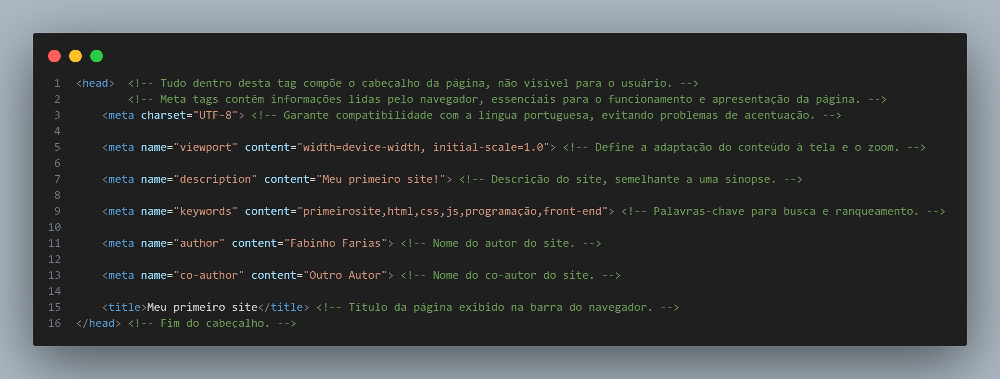

Ao entrar no mundo da programação, uma das primeiras decisões importantes é escolher a ferramenta certa para escrever, testar e depurar o código. É aqui que as IDEs desempenham um papel crucial, proporcionando um ambiente unificado que simplifica o processo de desenvolvimento. Para a produção desse conteúdo, a IDE escolhida foi o Visual Studio Code. Abaixo você encontra um tutorial de como instalar e configurar o VSCode, como é chamado, mas pode usar qualquer outra IDE que suporte o HTML5. Basta copiar e colar os códigos que estarão aqui que a saída será a mesma.
HTML, que significa HyperText Markup Language, é a linguagem de marcação padrão para criar páginas da web. Ele fornece uma estrutura básica para o conteúdo da web, indicando como o texto deve ser estruturado, quais imagens devem ser exibidas e como os links devem se comportar.
A estrutura básica de um documento HTML envolve o uso de várias tags que delimitam diferentes seções do conteúdo.
Para construir o código, é necessário fazer o uso de tags. Em HTML, as tags são elementos fundamentais que permitem estruturar e formatar o conteúdo de uma página web.
As tags são cercadas por colchetes angulares "<tag>" para a abertura e "</tag>" com a inclusão de "/"
para o fechamento.
Cada tag tem uma função específica e contribui para a organização, definição de informações para o navegador e apresentação do conteúdo para o leitor.
Como primeiro site, vamos construir um conteúdo em texto sobre dicas de programação para iniciantes. Iremos fazer o uso de cabeçalhos, títulos, seções, subseções e parágrafos.
No início do código, é necessário informar ao navegador o tipo de documento que será exibido. O "<!DOCTYPE html>" especifica
que a página está usando HTML5, a versão mais recente e comum do HTML. Essa declaração é importante porque influencia o modo como o navegador renderiza o conteúdo da página.
A especificação DOCTYPE ajuda a garantir que o navegador interprete o HTML corretamente, evitando comportamentos inesperados ou erros de renderização.
Para que este código seja melhor entendido, é necessário a presença de comentários nele.
Os comentários aparecem entre "<!--" e "-->".
<!DOCTYPE html> <!-- Comunicando ao navegador que este arquivo é do tipo HTML. -->Após iniciar o código informando ao navegador que o site estará aderindo aos padrões do HTML5, todo o conteúdo da página HTML será encontrado dentro da tag <html>. Nesta tag, o atributo "lang" determinará a linguagem do site (o padrão é o Inglês).
<!DOCTYPE html> <!-- Comunica ao navegador que este arquivo é do tipo HTML. -->
<html lang="pt-br"> <!-- Esta nova tag significa que todo o conteúdo do site HTML vai estar dentro dessa tag. -->
<!-- Atributo "lang" configurado para o português. -->
<!-- ----- Código ----- -->
<!-- ----- Código ----- -->
<!-- ----- Código ----- -->
<!-- ----- Código ----- -->
<!-- ----- Código ----- -->
</html>
Para não deixar trechos muito extensos, irei escrever e explicar cada parte do código separadamente. O código completo estará disponível ao final do conteúdo.
Um pequeno trocadilho com o <head>. Nele, a mágica acontece nos bastidores, pois as informações armazenadas não são mostradas pelo navegador. Este componente do HTML é como o cérebro da página, onde informações cruciais são armazenadas em meta tags. Essas meta tags, como artistas nos bastidores de um espetáculo, desempenham papéis específicos: o charset garante que a língua portuguesa seja interpretada corretamente, o viewport define a adaptabilidade à tela, a descrição fornece uma sinopse para os motores de busca, as palavras-chave facilitam a indexação, e o autor revela os mentores por trás da cortina. Apesar de invisível, o <head> é a chave para uma experiência de usuário e otimização eficientes.

<!-- ----- Código anterior ----- -->
<!-- ----- Código anterior ----- -->
<!-- ----- Código anterior ----- -->
<head> <!-- Tudo dentro desta tag compõe o cabeçalho da página, não visível para o usuário. -->
<!-- Meta tags contêm informações lidas pelo navegador, essenciais para o funcionamento e apresentação da página. -->
<meta charset="UTF-8"> <!-- Garante compatibilidade com a língua portuguesa, evitando problemas de acentuação. -->
<meta name="viewport" content="width=device-width, initial-scale=1.0"> <!-- Define a adaptação do conteúdo à tela e o zoom. -->
<meta name="description" content="Meu primeiro site!"> <!-- Descrição do site, semelhante a uma sinopse. -->
<meta name="keywords" content="primeirosite,html,css,js,programação,front-end"> <!-- Palavras-chave para busca e ranqueamento. -->
<meta name="author" content="Fabinho Farias"> <!-- Nome do autor do site. -->
<meta name="co-author" content="Outro Autor"> <!-- Nome do co-autor do site. -->
<title>Meu primeiro site</title> <!-- Título da página exibido na barra do navegador. -->
</head> <!-- Fim do cabeçalho. -->
<!-- ----- Código posterior ----- -->
<!-- ----- Código posterior ----- -->
<!-- ----- Código posterior ----- -->
Antes, quase tudo que estava no <head> do código só servia para o navegador. No <body>, estão inseridas as informações que você quer que sejam mostradas no seu site. Nas tags do <body>, serão, basicamente, elementos visuais. Por exemplo: tudo que você leu até agora deste site está contido dentro da tag <body> do conteúdo HTML desta página. Mas não apenas os textos, como também estão presentes imagens, cores, espaçamentos, links e outros elementos. Apenas um pequeno parêntese: o HTML é uma ferramenta para estruturar o site e não para deixá-lo bonito. Essa tarefa é do CSS.
Várias tags foram usadas neste site, mas na estrutura dos textos as duas abaixo são as principais:
<h1> até <h6>: São tags de cabeçalho que definem títulos ou cabeçalhos, sendo <h1> o mais importante e <h6> o menos.
É importante que haja apenas uma tag <h1>, que será o conteúdo principal do seu site, mas também é crucial que as outras tags não sejam usadas para estilizar o site.
<p>: Utilizada para criar parágrafos de texto.
Como os códigos de exemplo estão contribuindo para um site de dicas de programação, observe que dentro das tags de títulos estarão os tópicos da página e nas tags de parágrafo estará o conteúdo.
<body>
<h1>Dicas para Iniciantes em Programação.</h1>
<h2>1. Escolha da Linguagem de Programação</h2>
<p>Para começar, escolha uma linguagem de programação adequada para iniciantes, como Python, JavaScript ou Ruby. Cada linguagem tem suas próprias características, mas é importante começar com algo acessível.</p>
<h2>2. Prática Regular</h2>
<p>A prática regular é fundamental. Dedique algum tempo todos os dias para escrever código. Quanto mais você pratica, mais confortável e proficiente se torna.</p>
<h2>3. Faça Pequenos Projetos</h2>
<p>Comece com pequenos projetos para aplicar o que aprendeu. Isso ajuda a consolidar seus conhecimentos e a construir confiança.</p>
<h2>4. Busque Recursos Online</h2>
<p>A internet é uma fonte rica de recursos para aprendizado. Utilize tutoriais, cursos online e comunidades de programadores para expandir seu conhecimento.</p>
<h2>5. Não Tenha Medo de Errar</h2>
<p>Erros são parte do phrocesso de aprendizado. Não tenha medo de cometer erros, pois são oportunidades de aprendizado. Analise os erros, corrija e siga em frente.</p>
</body>
</html>
Link para uma documentação do html;
Site exemplo!
Código completo do site!